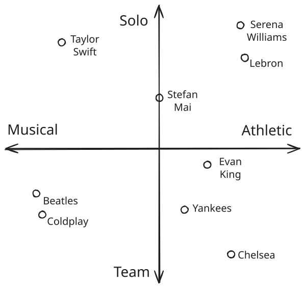
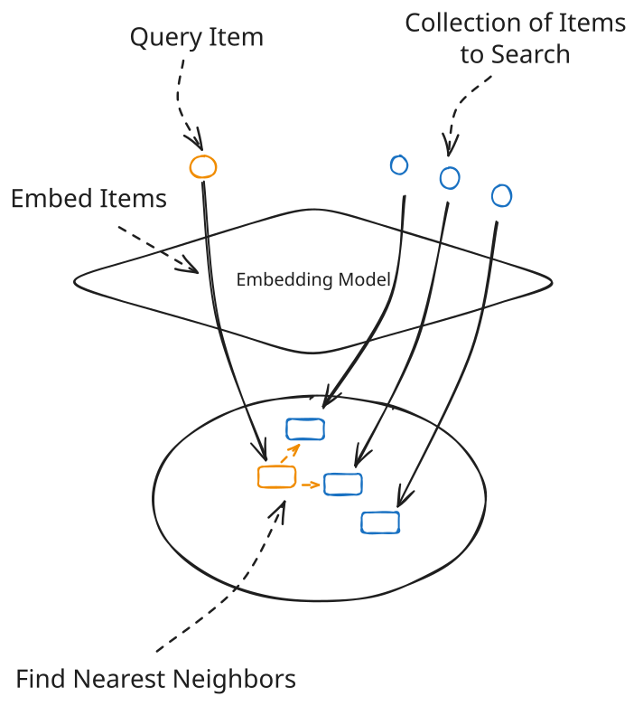
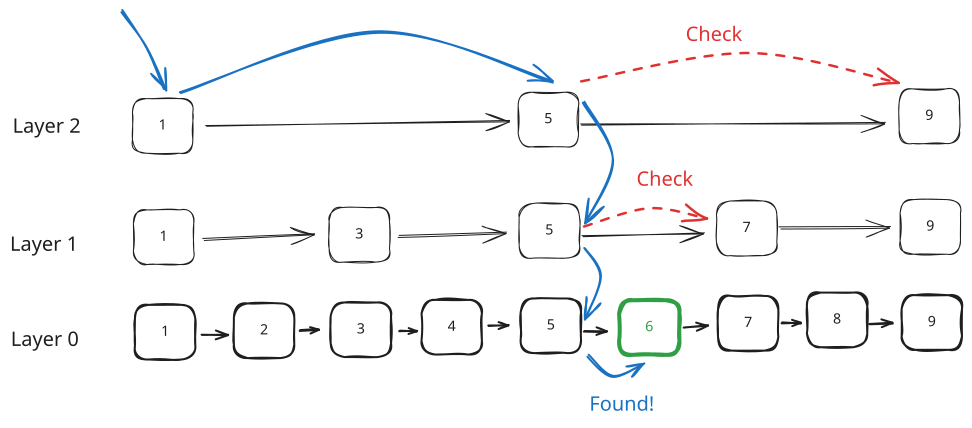
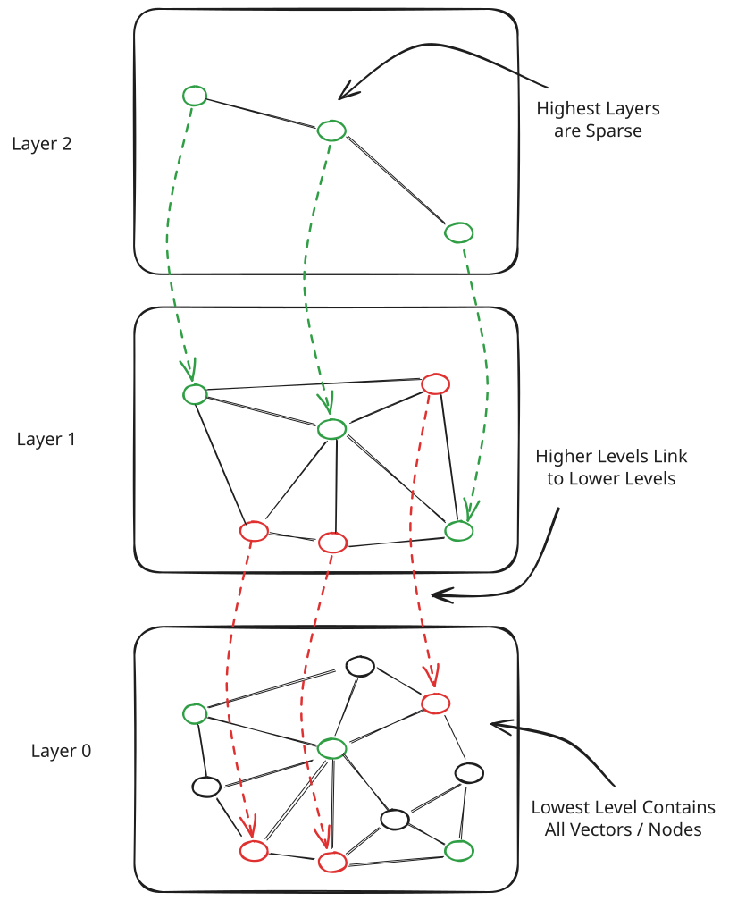
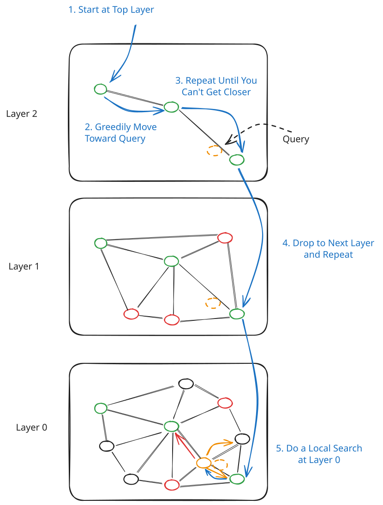
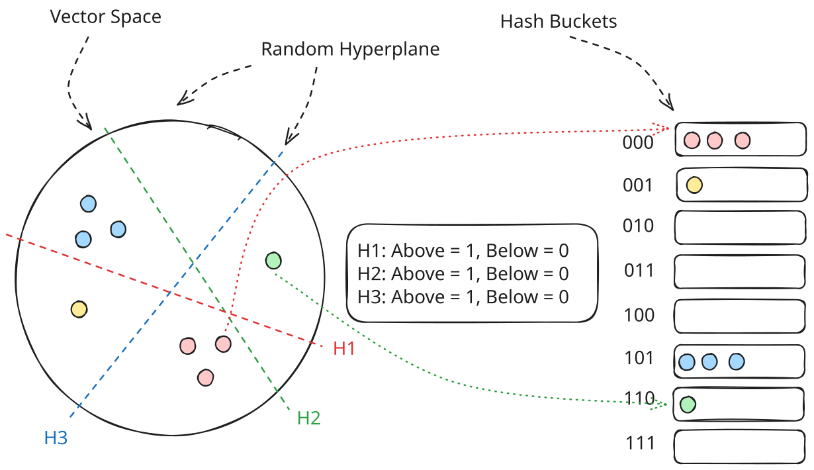
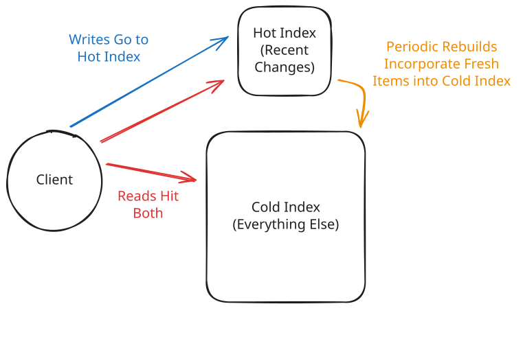
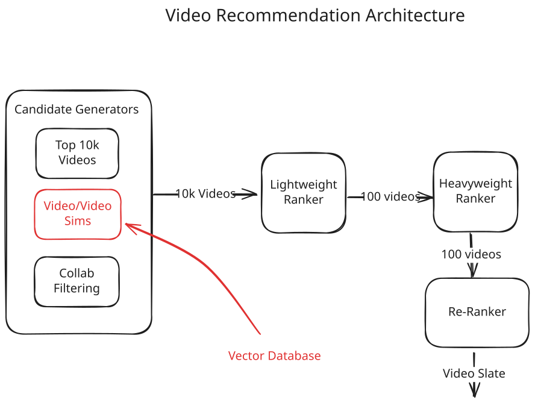

Key Technologies
Vector Databases
Learn how vector databases power similarity search, recommendations, and AI applications in system design.
If you've been paying attention to anything in tech over the past few years, you've noticed "embeddings" everywhere. Search engines that actually understand what you mean. Recommendation systems that surface eerily relevant content. Chatbots that can retrieve information from massive document collections. All of these rely on the same underlying primitive: finding things that are similar to other things, fast.
This isn't actually a new concept. Vector databases and their related techniques have been around for a long time in recommendation systems. But the power of vector databases has been amplified by the rise of new machine learning techniques and it unlocks a cool new set of infra applications.
Traditional databases are great at exact lookups. Give me the user with ID 12345. Find all orders placed on January 1st. But ask a traditional database "find me documents similar to this one" and you're in trouble. That's where vector databases come in.
This deep dive will cover what vector databases are, how they work under the hood, and most importantly, how to use them effectively in a system design interview. We'll go deep on the indexing algorithms that make similarity search fast, but we'll also be practical about when you actually need a dedicated vector database versus when a simple extension to your existing database will do the job.
If the detail here is frightening to you, skip to the applications section at the end and work backwards. Most system design interviews won't cover vector databases. Those that do often don't care that you know the internals of vector databases as much as they care about you knowing how and where to use them.
What's a Vector Anyway?
Before we talk about databases that store vectors, we need to understand what we're actually storing.
A vector (or embedding) is just an array of numbers that represents something. That "something" could be a word, a sentence, an image, a user, a product, or really anything you can feed into a machine learning model. The magic is that similar things end up with similar vectors.
// Two sentences that mean similar things
"The cat sat on the mat" → [0.12, -0.34, 0.78, ..., 0.45] // 1536 numbers
"A feline rested on a rug" → [0.11, -0.32, 0.79, ..., 0.44] // very similar!
// A sentence with different meaning
"The stock market crashed" → [-0.89, 0.12, -0.45, ..., 0.23] // very differentThe typical embedding has somewhere between 128 and 1536 dimensions (OpenAI's text-embedding-3-large uses 3072). Each dimension captures some aspect of the meaning, though the individual dimensions aren't usually interpretable by humans. What matters is that the geometric relationships between vectors reflect semantic relationships between the things they represent.

Vector Similarity with just 2 dimensions for visualization (real embeddings have many more!)
Note we're being a bit hand-wavey about "similarity" here. Does similar mean the same color? Or excerpts from the same book? Or a similar concept? Well, that actually depends a bit on the embedding model you're using.
Many applications will use a pre-trained embedding model. For text, this might be something like OpenAI's embedding API, Sentence Transformers, or BERT. For images, models like CLIP or ResNet. These models are trained on diverse tasks such that the notion of similarity you care about is probably captured by the embedding model. Think of it like a very vague "semantic" similarity. For these, to you the embedding model is an expensive GPU function: data goes in, fixed-length vector comes out.
But "similarity" can be much more precise for the application. A very common application for recommendation systems is to find items that are likely to be purchased together. Diapers and bottles are only vaguely similar in the sense they're both related to babies, but profoundly similar in that they're things that new parents are often buying. In these cases, a custom ML model can create these embeddings specifically targeting this idea of "similarity".
Similarity Metrics
Once you have vectors, you need a way to measure how similar two vectors are. There are a few common approaches:
Euclidean distance (L2) is the straight-line distance between two points in space. If you remember the Pythagorean theorem from high school, that's essentially what we're doing, just extended to hundreds of dimensions. Smaller distance means more similar. This metric cares about both direction and magnitude.
Cosine similarity measures the angle between two vectors, ignoring their magnitudes. Two vectors pointing in the same direction have cosine similarity of 1, perpendicular vectors have 0, and opposite vectors have -1. This is great when you've normalized your embeddings (which most embedding models do).
Dot product is similar to cosine similarity but doesn't normalize for magnitude. It's essentially cosine similarity multiplied by the lengths of both vectors. Some systems use this because it's slightly faster to compute.
Hamming distance counts the number of positions where two binary vectors differ. This is extremely fast (just XOR the bits and count), which is why it's popular in certain indexing schemes like Locality Sensitive Hashing.
For an infra-style system design interview, the choice of similarity metric usually doesn't appear much at all. You can mention "we'd use a cosine similarity or some appropriate similarity metric" and come ahead of most candidates. In an ML system design interview, the choice might be more significant depending on your embedding model and use case. If your embedding model is trained on a specific task, you'll use that (e.g. minimizing the dot product between two items that are bought together, that's your distance metric).
The Nearest Neighbor Problem
Now, once we have a bunch of vectors and a similarity metric, we can start to ask questions. These are usually framed in terms of a "query vector" which you can think of like your search term. For most applications the query vector is the embedding of the item to which you're trying to find similar things.
The K-Nearest Neighbors (KNN) problem is: given a query vector, give me the K most similar vectors in your collection. Or, given an item, find the K most similar items in your collection.

KNN Search for Similar Items
The naive approach KNN search is simple. Compare your query against every vector in the database, compute similarity scores, sort, return the top K. This is exact KNN and it's effectively O(n) where n is the number of vectors (k is typically very small, so we can ignore it).
# Python Pseudocode
def exact_knn(query_vector, all_vectors, k):
heap = [] # min-heap by similarity
for vector in all_vectors:
similarity = compute_similarity(query_vector, vector)
if len(heap) < k:
heapq.heappush(heap, (similarity, vector.id))
elif similarity > heap[0][0]:
heapq.heapreplace(heap, (similarity, vector.id))
return sorted(heap, reverse=True)For a million vectors with 1536 dimensions, that's about 6 billion floating point operations per query. This can get expensive and is too slow for many applications.
Astute readers might note that my pseudocode here can be optimized. On a CPU, SIMD (Single Instruction Multiple Data) instructions can be used to compute the similarity scores for multiple vectors (2 to 8, depending on the CPU) at once. On a GPU, vectorized operations can be used to compute the similarity scores for thousands of vectors at once. So if exact KNN is required, there's ways to make it faster! But most applications can tolerate a bit of inaccuracy to gain a lot of speed.
But what if we don't need to find the exact nearest neighbors? What if we're okay with finding vectors that are probably the nearest neighbors most of the time? This is Approximate Nearest Neighbor (ANN) search, and it's the foundation of every practical vector database. With ANN, we trade off accuracy for speed. We don't always find the exact nearest neighbors, but we find a lot of close ones quickly.
The key metric for ANN quality is recall: of the true top-K nearest neighbors, what fraction did we actually find? A recall of 0.95 means we found 95% of the true nearest neighbors. For most applications, that's plenty good enough.
And this forms the underpinning of all vector databases. Vector databases allow you to make a smooth tradeoff between these three things:
- Recall: How accurate are our results?
- Latency: How fast can we return results?
- Memory: How much space does our index consume (especially RAM)?
How Vector Databases Work
So we've got vectors, we've got similarity metrics, and we know that brute-force search doesn't scale. How do vector databases actually make this fast? It comes down to clever data structures that let us skip most of the comparisons. We'll look at the indexing algorithms that power approximate nearest neighbor search, then cover the practical concerns: filtering, updates, and scaling to billions of vectors.
Indexing Strategies
The key to making a vector database work is computing indexes on the vectors you have stored. These indexes make the retrieval faster and often require some tradeoffs as described above, often compromising recall for big reductions in latency. They also introduce complexity for inserts, updates, and deletion of vectors which we'll get into a bit. First, let's talk about some of the main indexing strategies.
There are a lot of indexing strategies for approximate nearest neighbor search. The tradeoffs between them are hard to reason about without actually running experiments on your data, it's not often the case that you can look at an application and prove that one indexing strategy will be superior to another. In fact, this is one of the main benefits of using a vector database: it lets you swap between indexing strategies and tune parameters without rewriting your application.
You'd typically have an evaluation set (queries with known good results) and measure recall/latency tradeoffs to find what works for your use case.
What follows are a description of some algorithms. Keep in mind that most interviews will rarely approach this level of detail. The important thing is not that you can implement these algorithms, but you have an intuition about how they work.
HNSW (Hierarchical Navigable Small World)
HNSW is the most popular algorithm in production vector databases. If you remember one indexing strategy, make it this one.
The intuition is similar to skip lists. In a regular linked list, finding an element requires scanning through every node, it's O(n). Skip lists solve this by adding "express lane" layers above the base list. The bottom layer has all elements, but higher layers skip over most elements, keeping only a random subset. To search, you start at the top express lane and zoom forward until you'd overshoot, then drop down a level and continue. This gets you O(log n) search in a linked list.

Skip list structure - express lanes let you skip over elements
HNSW applies the same idea to graph-based nearest neighbor search. It builds a multi-layer graph where each node is a vector. But what does that actually mean?
Think of it this way: when you insert a vector into an HNSW index, it becomes a node. The index then finds the vectors most similar to your new vector and creates edges connecting them. So if you insert an embedding for "Taylor Swift", it gets connected to nearby embeddings like "Beyoncé" and "Ed Sheeran"—not because anyone manually linked them, but because their vectors are geometrically close in the embedding space.
The result is a graph where you can "walk" from any vector to similar vectors by following edges. And crucially, if two vectors are similar, there's likely a short path between them through the graph.

HNSW Structure - a multi-layer graph with sparse upper layers and dense lower layers
The same idea from skip lists appears here. The bottom layer (Layer 0) contains all vectors, each connected to their nearest neighbors. But searching this dense graph is still slow for large datasets. So HNSW adds "express lane" layers on top. Each vector has some probability of being "promoted" to higher layers. The result is a hierarchy: Layer 0 has millions of nodes densely connected to their neighbors, Layer 1 might have tens of thousands, Layer 2 might have hundreds, and so on. Vectors in higher layers act as "long-range" connections that let you jump across the space quickly.
Searching HNSW works by starting at the top and working down:
- Start at the top layer with a random entry point
- Greedy search: Move to whichever neighbor is closest to your query vector
- Repeat until you can't get any closer at this layer
- Drop down to the next layer (which has more nodes) and continue greedy search
- At Layer 0, do a more thorough local search to find the K nearest neighbors

HNSW Search - navigating from sparse top layer down to dense bottom layer
The top layers let you quickly "zoom in" to the right region of the space. By the time you reach Layer 0, you're already in the right neighborhood and only need to explore locally. This gives O(log n) search complexity with excellent recall—HNSW consistently achieves 95%+ recall with low latency, which is why it's become the default choice.
But this isn't free. HNSW indexes are memory-hungry. You need to store the graph structure (all those edges) on top of the vectors themselves—roughly 2x the memory of raw vectors. Building the index is slow since you're constructing this elaborate graph structure. And inserts are relatively expensive because each new vector needs to find its place in the graph and establish connections at each layer. We'll get into this in a second.
When your interviewer asks "how does the vector database find similar items quickly?", HNSW is usually the answer. You can explain it as: "It builds a multi-layer graph where vectors are nodes. Search starts at a sparse top layer and greedily navigates toward the target, dropping to denser layers as it gets closer. It's like skip lists but for high-dimensional space."
IVF (Inverted File Index)
IVF takes a different approach. Instead of building a graph, it partitions your vectors into clusters using k-means clustering. Each cluster has a centroid (the center point), and vectors are assigned to their nearest centroid.
At query time, you first find the closest centroids to your query vector, then only search within those clusters. If you have 1000 clusters and search 10 of them, you've eliminated 99% of comparisons.
You might be thinking to yourself: why can't I just search the "right" cluster? The problem, like geospatial indexing, is the edges. If our search query is nearby the edge of a cluster, then we need to grab the adjacent clusters in order to make sure we're not missing anything. In 2d space there's plenty of room to be on an "edge". In 1536d space, there's a lot more edges!
The parameter nprobe controls how many clusters you search. Higher nprobe means better recall but slower queries. This gives you a nice knob to tune the recall/latency tradeoff.
These probes are easily parallelized, so for a single query you don't necessarily need to take a latency hit as nprobe increases. But for real systems under load, you've got enough requests to saturate compute. This means a latency hit for the the average request.
IVF is faster to build than HNSW and handles inserts more gracefully (you just assign the new vector to a cluster). It uses less memory since you're only storing cluster assignments, not a full graph. The downside is typically lower recall for the same latency, especially if your data isn't clustered naturally.
Locality Sensitive Hashing (LSH)
LSH takes a fundamentally different approach: instead of building a graph or clustering, it uses hash functions designed so that similar vectors are likely to hash to the same bucket. Regular hash functions try to avoid collisions. LSH hash functions are designed to cause collisions for similar items.
The most common approach for cosine similarity uses random hyperplanes (hyperplane is just a fancy word for a plane in a high-dimensional space). Imagine drawing a random line through your vector space. Every vector is either "above" or "below" that line—that's one bit of your hash. Do this with, say, 8 random hyperplanes and you get an 8-bit hash. Vectors that are close together will likely be on the same side of most hyperplanes, so they'll have similar (or identical) hashes.

LSH uses random hyperplanes to partition vector space - similar vectors end up in the same hash bucket
We make this more robust by using multiple hash tables with different random hyperplanes. A single table might miss similar vectors that happen to fall on opposite sides of one hyperplane. But with multiple tables, the probability that similar vectors share at least one bucket goes up dramatically.
At query time, you hash your query vector in all tables, collect all candidates from matching buckets, then compute exact distances only on this (hopefully small) candidate set. The tradeoff is clear: more tables and more bits means better recall but more memory and slower queries.
LSH was popular before HNSW became dominant. It's simple to implement, handles high dimensions well, and has nice theoretical guarantees. But in practice, HNSW usually achieves better recall for the same latency. LSH is still useful when you need:
- Very fast index building (just compute hashes)
- Streaming data where vectors arrive continuously
- Hamming distance similarity (LSH is natural here)
Annoy
Like LSH, the idea of cutting up the vector space using random hyperplanes can be extended to tree-based structures. Annoy (Approximate Nearest Neighbors Oh Yeah, from Spotify) builds a forest of random projection trees. The idea is beautifully simple: recursively split your vector space with random hyperplanes until each leaf node contains a small number of vectors.
To build a tree, you pick two random vectors and draw a hyperplane equidistant between them. All vectors on one side go into the left subtree, all vectors on the other side go into the right subtree. Repeat recursively until each leaf has few enough vectors (say, 100). The result is a binary tree where nearby vectors tend to end up in the same leaf or nearby leaves.
To search, you traverse the tree toward the leaf that matches your query vector. But a single tree can make mistakes—your true nearest neighbor might have ended up on the other side of an early split. So Annoy builds a forest of many trees (typically 10-100), each with different random splits. At query time, you search all trees, collect candidate leaves, and compute exact distances on the union of candidates.
If you're familiar with classical ML approaches, there is a strong analog to the Random Forest algorithm here!
The killer feature of Annoy is memory mapping. The entire index is stored as a single file that can be mmap'd into memory. mmap is a low-level system call that maps a file into memory and it's very efficient compared to the alternative of orchestrating file reads and writes from userspace. This means:
- Multiple processes can share the same index without copying
- You can work with indexes larger than RAM (the OS pages in what you need)
- Index loading is instant (just mmap, no deserialization)
The downside is that Annoy indexes are immutable. Once built, you can't add or remove vectors—you have to rebuild the entire index. This makes it great for static datasets (like Spotify's music catalog that updates in batches) but unsuitable for real-time applications where vectors arrive continuously.
Annoy was the go-to solution at many companies before HNSW took over. You'll still see it in production systems where the dataset is static and memory mapping is valuable.
Filtering and Hybrid Search
Ok, still with me? Now you're an expert on indexing vectors. To summarize: vector search opens up a way to retrieve "similar" items from a database, and we can make that efficient (albeit slightly inaccurate) using algorithms like HNSW, IVF, and LSH. But what about when we want to retrieve items that are not similar, but match a specific query?
Real applications rarely want "find the 10 most similar items" without constraints. You usually want "find the 10 most similar items that are in stock" or "that are in the user's price range" or "that were published this year".
This is called filtered vector search, and it can get trickier than it sounds. You have two options:
Post-filtering: Find the top-N similar vectors (where N >> K), then filter down to K results. The problem is if your filter is restrictive, you might not find K results. You can increase N, but then you're doing more work.
Pre-filtering: Filter first, then search only within the filtered set. The problem is you might not be able to use your fancy index structures on an arbitrary subset of data.
Which one is best depends entirely on the data, which makes it very hard to make sweeping statements about what is right for a particular application. So in general it's safe to remind your interviewer "this is going to depend heavily on the data, I'd probably set up a benchmark with real data and see which one works best".
That said, when we can make coarse statements (e.g. if you only are doing vector search for a tiny subset of your data), pre-filtering is probably better and interviewers like to find edge-cases like this to test your intuition. Same sort of problems we tackled in problems like FB Post Search, with a multi-dimensional twist.
Now just because something is hard doesn't mean the underlying databases aren't going to try to take the heavy lifting off your shoulders. Most vector databases use hybrid approaches. Some maintain multiple indexes for common filter combinations. Others integrate filtering directly into the index traversal. Let's look at how three popular systems handle this:
Postgres's pgvector relies on Postgres's query planner. You write a normal SQL query with both a WHERE clause and an ORDER BY using vector distance. The planner decides whether to use the vector index, a B-tree index on your filter column, or some combination. For highly selective filters, it often skips the vector index entirely and does brute-force similarity on the filtered rows—which is actually faster. The catch is that pgvector doesn't do true "filtered HNSW traversal"—it's either/or, so you can get suboptimal plans when the filter selectivity is in an awkward middle ground.
Elasticsearch has tighter integration. Its kNN search supports a filter parameter that applies during index traversal, not after. Under the hood, it uses a combination of HNSW and filtered candidate generation. When you search, ES first identifies candidate vectors from the HNSW graph, then applies your filter, then continues exploring until it has enough filtered results. This means highly restrictive filters slow down the search (you have to traverse more of the graph to find K matching results), but you're guaranteed K results if they exist. ES also supports hybrid search natively—you can combine BM25 keyword scoring with vector similarity using sub_searches or rescore.
Finally, purpose-built vector databases like Pinecone treat metadata filtering as a first-class feature. Every vector can have arbitrary metadata (up to 40KB), and filters are applied during the ANN search, not before or after. Pinecone builds specialized index structures to support this by basically maintaining inverted indexes on metadata fields alongside the vector index. When you query with filters, it intersects the metadata filter results with the vector search in a single operation. Pinecone also lets you tune the "filter effort" parameter to trade off between filter precision and latency.
All to say. There are options.
Finally, to add even more complexity there's a class of searches where we want to do both full-text search and vector search at the same time, often called "hybrid search". A query like "red running shoes" might use keyword matching for "red" and "running shoes" while using vector similarity to find semantically related products. This often gives better results than either approach alone. This can be accomplished by doing both searches in parallel and merging the results, or by clever merging strategies.
Inserts, Updates, and Index Maintenance
Vector databases are generally optimized for read-heavy workloads. Writes are more complicated, especially with sophisticated indexes like HNSW.
Inserts can work in real-time, but it's often compute-expensive to do so. Adding a new vector to an HNSW graph means finding its place and updating connections. And if you're doing many inserts, the graph structure can degrade over time (new vectors might not be as well-connected as vectors that were present during initial build). Similarly, with IVF over time you may need to rebuild the index as clusters move and evolve or risk performance degradation.
Many systems handle this by maintaining a small "hot" index for recent inserts and a larger "cold" index for older data. Queries search both and merge results. Periodically, the hot index gets merged into the cold index with a full rebuild. The "hot" index need not be a full index at all, it can also be just a dumb list of entries that haven't been indexed which we exhaustively search.

Hot and Cold Index
This pattern is useful in more places than just vector databases. As an example, if your system needs to handle deletions of items but those deletions rarely happen, it might be easier to maintain a small index of deleted items that you can check before returning results to user. Then, you have time to do all of the cleanup necessary to make sure that item doesn't exist anymore in caches, precomputations, etc.
Updates are usually implemented as delete + insert. Most systems use soft deletes (marking vectors as deleted) rather than actually removing them from the index. This means deleted vectors still consume space and slow down queries until you rebuild or compact the index.
Index rebuilds can be slow. Building an HNSW index over millions of vectors can take hours. You need to plan for this. Some strategies:
- Rolling rebuilds where you build a new index alongside the old one, then swap
- Partitioned indexes where you can rebuild one partition at a time
- Background reindexing that doesn't block queries
If your embeddings change frequently (maybe you're updating your ML model, or your underlying data changes rapidly), you'll want to think carefully about your update strategy. Batch updates with periodic rebuilds are often more practical than real-time updates.
The expensive index maintenance is one major difference between vector databases and traditional databases. Traditional databases can usually handle updates in real-time because they're designed to be able to handle a lot of writes. Vector databases are oftentimes not. In interviews, this means you're thinking (and discussing) more deliberately about a rebuild strategy including things like a side "hot" index as discussed above.
Vector Database Options
When it comes to choosing a vector database, there's a lot of choices. More than this, the field is moving quite quickly and solutions that were popular a few years ago are starting to show their age.
So here's practical advice: start simple. Counter-intuitively, you probably don't need a purpose-built vector database. Extensions to databases you're already using will handle millions of vectors just fine, and you avoid the operational overhead of another system. Only reach for a dedicated vector DB when scale or features demand it.
Vector Extensions for Traditional DBs and Stores (Start Here)
If you're bolting on some functionality to an existing architecture, you probably shouldn't mangle your design with too much additional complexity. Extensions to databases we already recommend like Postgres and Elasticsearch are often a good starting point.
pgvector is the first thing to try if you're already on PostgreSQL. It supports both HNSW and IVF indexes and handles millions of vectors without breaking a sweat. The real advantage is everything else you get for free: ACID transactions, familiar tooling, and the ability to join vector results with your relational data. Need to find similar products that are also in stock and in the user's region? One query.
Elasticsearch kNN is great if you already have Elasticsearch for search. Adding vector search is straightforward, and you get excellent hybrid search (keyword + vector) out of the box. The downside is that ES is already operationally complex, but if you're running it anyway, adding vectors is incremental.
Redis Vector Search fits well if you need real-time, low-latency requirements. Redis is already a common part of most architectures, and the vector extension is simple to use. The index options are simpler than dedicated vector DBs, but for many use cases that's fine.
S3 Vector is a relatively new offering from AWS that enables you to store vectors in S3 and query them using the S3 API. It's a good option if you're already using S3 for other purposes and don't want to add the complexity of a dedicated vector database.
Purpose-Built Vector DBs (When You Need Scale)
There will be some designs where you're dealing with massive scale and the problem specifically centers around a retrieval or recommendation problem. These are the times when you should consider a purpose-built vector database. A good rule of thumb is if you're dealing with more than 100 million vectors, you should consider a purpose-built vector database.
Pinecone is fully managed and serverless. You don't run any infrastructure; you just call an API. It's the easiest to operate, which is worth a lot. The tradeoff is cost and less control.
Weaviate is open source with good hybrid search support and a GraphQL API. It's a reasonable middle ground between DIY and fully managed. Easier to operate than some alternatives but still gives you control.
Milvus is open source and built for serious scale. It can handle billions of vectors. The flip side is operational complexity. You're running a distributed system with multiple node types.
Qdrant is open source, written in Rust, and has particularly good filtering support. Worth considering if complex filtered queries are central to your use case.
Chroma is lightweight and great for prototyping. It's increasingly popular in the LLM/RAG space because it's easy to get started with.
Using Vector Databases in Your Interview
Common Interview Scenarios
Vector databases show up in a bunch of system design questions, almost exclusively adjacent to AI/ML. You're rarely going to be surprised by interviews like this, you'll know that either you're interviewing for a team close to AI/ML or the entire company is focused on this. If so, there's a few patterns of questions you'll see which effectively mandate a vector database:
Semantic search: "Design a document search system" or "Design a code search tool". Users enter natural language queries, you find relevant documents. Classic embedding + vector search.
Recommendations: "Design a product recommendation system" or "Design a content recommendation feed". Find items similar to what the user has engaged with. Often combined with collaborative filtering.
Image/video similarity: "Design reverse image search" or "Design a similar videos feature". Same pattern: embed the media, search for similar embeddings.
RAG systems: "Design a knowledge base Q&A system" or anything involving LLMs with custom data. Vector search retrieves relevant documents, LLM synthesizes an answer.
Deduplication: "Design a near-duplicate detection system". This could be detecting plagiarism, finding similar support tickets, or identifying duplicate listings. Embed items, find items within some similarity threshold.
Anomaly detection: "Design a fraud detection system". Embed transactions, find transactions that are dissimilar to normal patterns.
If you don't have an ML background, you may still benefit from reading the high level design of the ML System Design breakdowns for some of these systems. This will give you some intuition about where vector databases.
Architecture Patterns
There are a few common ways to wire up vector search in a system:
Pattern 1: Vector DB as a separate service. This is the most common. Your application generates or retrieves an embedding, sends it to the vector service, gets back IDs of similar items, then fetches full item details from your primary database. Clean separation of concerns.
Pattern 2: Hybrid search. Query goes to both a keyword index (like Elasticsearch) and a vector index. Results get merged with some ranking function. Good for search applications where both exact matches and semantic similarity matter.
Pattern 3: Two-stage retrieval. Vector search returns a large candidate set (maybe top 1000), then a more sophisticated (but slower) model reranks them to pick the final results. Common in recommendation systems where the reranker can use features the embedding doesn't capture.

Multi-Stage Architecture for Video Recommendations
Remember that unless the question is specifically focused on this task, you're more likely to rabbit hole into a world of new and challenging problems than you are to impress the interviewer with your depth by adding unnecessary complexity. Stick with Pattern 1 for most problems!
Key Design Decisions to Discuss
When you introduce vector search in an interview, you'll want to address:
Consistency requirements. Vector search results are usually okay to be slightly stale. New items might not be searchable for a few seconds or even minutes. Mention this explicitly: "Vector search can be eventually consistent; we don't need the embedding immediately searchable after insert."
Update strategy. How do embeddings get into the system? Real-time as items are created? Batch job that runs hourly? This depends on your latency requirements.
Filtering strategy. If your query involves filters, how do you handle them? Pre-filter, post-filter, or hybrid? This is especially important if filters are selective.
Far less common for an infra-style interview would be discussions around:
Embedding model selection. What model produces your embeddings? This affects dimension size, quality, and latency. For text, mention something like "we'd use a sentence transformer model" or "OpenAI's embedding API". You don't need to go deep unless it's an ML system design interview.
Index type. "We'd use HNSW for best query performance" is usually the right answer unless you have specific constraints (very write-heavy, extremely large scale, memory constraints).
Embedding updates. Occasionally you'll change or refresh the embedding model. This will mean a massive rebuild and can sometimes require some careful orchestration to pull off. Ensuring that your APIs include details about which model produced the embedding will ensure you're not searching with the wrong embeddings.
Numbers to Know
Some rough numbers that are useful in interviews:
- Embedding dimensions: 128-1536 typical. OpenAI uses 1536, many open-source models use 384 or 768.
- Memory per vector: 4 bytes per dimension for float32. A 1536-dim vector is about 6KB raw. (Bigger than you might think!)
- 1 million vectors @ 1536 dims: About 6GB just for vectors, more with index overhead (HNSW roughly doubles it).
- Query latency: Sub-10ms is achievable for well-tuned systems. 1-5ms is common.
- Recall targets: 95%+ is usually acceptable. 99%+ is achievable but costs more in latency or memory.
- Throughput: Tens of thousands of queries per second per node is realistic for in-memory indexes.
Gotchas and Limitations
A few things to keep in mind and potentially mention in interviews:
Vector databases are not transactional databases. Don't try to use them as your source of truth. They're great at similarity search but terrible at everything else databases do. Your authoritative data lives elsewhere; the vector DB is an index.
Embedding drift is a real operational concern. If you change your embedding model, all your old embeddings are now incompatible. You either need to re-embed everything (expensive) or maintain multiple indexes during a transition. This is worth planning for.
Cold start is a problem for personalization. If you're embedding user behavior to find similar users, new users have no behavior to embed. You need fallback strategies.
Dimensionality vs. performance is a tradeoff. Higher-dimensional embeddings capture more nuance but are slower to search and use more memory. For some applications, 128 dimensions is plenty. Don't assume you need the biggest embedding your model can produce.
Index building takes time. Building an HNSW index over 10 million vectors can take an hour or more. This affects how quickly you can deploy changes or recover from failures.
Exact match is not what vector search does. If you need to find an exact document by ID, use a regular database. Vector search finds similar things, not identical things. Sometimes you want both.
Summary
Vector databases enable a new class of applications built on semantic similarity rather than exact matching. The core technology is approximate nearest neighbor search, with HNSW being the most common algorithm in production systems.
The practical advice is to start simple. If you're running PostgreSQL, try pgvector first. Only graduate to a purpose-built vector database when you've outgrown what extensions can provide. The complexity of operating another system is often underestimated.
In interviews, vector databases are increasingly relevant for search, recommendations, and anything involving AI/ML. Know what problem they solve (find similar things fast), how they solve it (ANN indexes like HNSW), and when they're the right tool (semantic similarity, not exact match). Start with the simple architecture and add complexity only when the requirements demand it.
The field is evolving fast. New indexing algorithms, tighter database integrations, and better tooling appear regularly. But the fundamentals of embedding data, measuring similarity, and making tradeoffs between recall, latency, and memory will remain relevant regardless of which specific technology wins.
Test Your Knowledge
Answer the question below to find your gaps.
Question 1 of 15
What does the 'recall' metric measure in approximate nearest neighbor search?
1
Fraction of true top-K neighbors found
2
Total memory consumed by the index structure
3
Percentage of the total database scanned
4
Average query latency under load